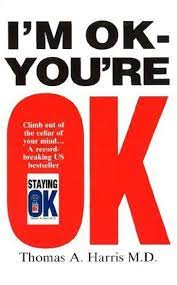

WISE AND OTHERWISE
A Salute to Life is a non-fiction book written by Sudha Murthy, chairperson of the Infosys Foundation and the wife of Narayan Murthy.
IKIGAI
“Ikigai” is a Japanese word that means- a reason for living, a meaning for living. Having an ikigai means having a clear purpose that makes our life .
SECRET

Regarded as a life-changing read by many readers, The Secret by Rhonda Byrne is a self-help book that embarks to motivate the reader about a universal paradigm about success that can be achieved through it remains hidden for most people. The book explores about unveiling this little secret which may transform how people look at things and lead them on to the road of success and true happiness.
POWER OF SUBCONSCIOUS MIND
The Power Of Your Subconscious Mind, a self-help book by Joseph Murphy, seeks to help its readers transform the way they live by transforming the way they think.
ATOMIC HABITS
James Clear, an expert on habit formation, reveals practical strategies that will teach you how to form good habits, break bad ones, and master the tiny behaviors that lead to remarkable results. He draws on proven ideas from biology, psychology, and neuroscience to create an easy-to-understand guide for making good habits inevitable and bad habits impossible
ALCHEMIST

Paulo Coelho's masterpiece tells the magical story of Santiago, an Andalusian shepherd boy who yearns to travel in search of a worldly treasure as extravagant as any ever found.The story of the treasures Santiago finds along the way teaches us, as only a few stories can, about the essential wisdom of listening to our hearts following our dreams.
11 COMMAMNDMENTS OF MAXIMIZATION
Eleven Commandments of Life Maximization does not claim to offer instant happiness, nor make us richer, thinner and youngerlooking, but it tells us the brutal truth of why we are where we are and how to live our life.
I AM OKAY YOU ARE OKAY

This practical guide to Transactional Analysis is a unique approach to solving your problems. Hundreds of thousands of people have found this phenomenal breakthrough in psychotherapy a turning point in their lives.One of the world's best psychiatrists, Thomas A Harris, explains how to gain control of yourself, your relationships and your future